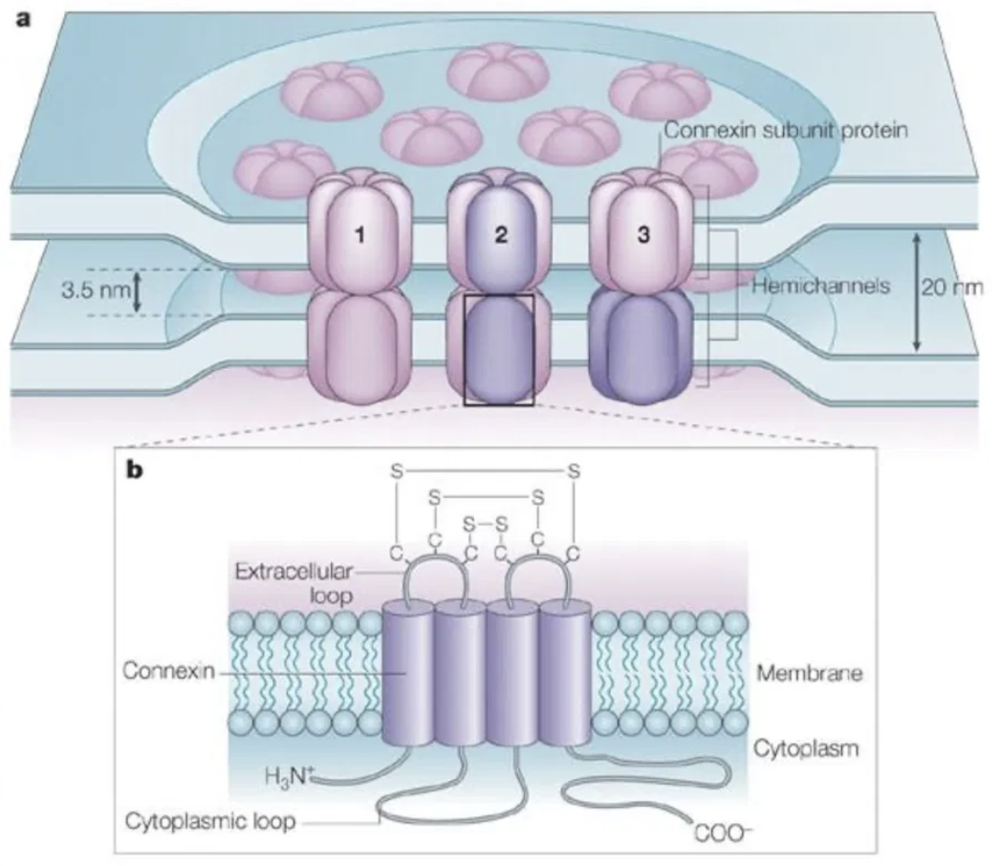

Here is the part that surprises people. The same environmental DNA that maps a reef is becoming raw material for a new kind of drug design. Modern AI models can effectively “dream up” new proteins, and they can be tuned toward the proteins of a particular ecosystem, the exact place a sample came from. In that sense the world's genomic diversity becomes a painter's palette: the richer and more representative the data, the more the models have to work with.
The applications are already concrete. In one collaboration with Dr. Michael Levin's lab at Tufts University, the team explored an AI-designed cardiac peptide aimed at gap-junction proteins, the connexin channels that carry electrical and metabolic signals between heart cells and are implicated in arrhythmias after cardiac events.


If eDNA is this valuable, the communities who steward these ecosystems must be empowered to generate their own data, and own it, so the benefits flow back to the places and people the samples came from.